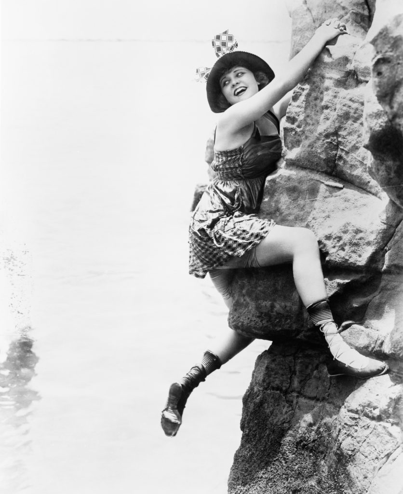
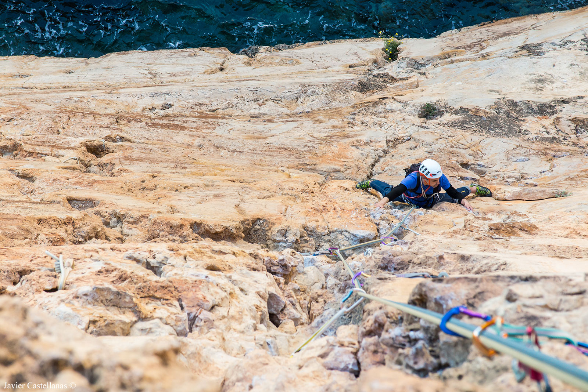

¿Como empezo todo?
Para comprender la historia de la escalada, hay que saber que el ser humano siempre ha querido subir. Subir más alto. Movido por la curiosidad por saber qué había ahí arriba. O para construir casas en lugares altos para impedir ataques de sus enemigos. O en busca de alimento. Por eso es tan difícil establecer cuál es el origen concreto sobre la historia de la escalada. Pero sí que hay varios hitos reseñables que, uniéndolos, dan lugar a una evolución hasta llegar a la escalada tal y como la conocemos hoy día.
El primer precedente de la escalada
Antoine de Ville fue el primero en escalar una pared, el Mont Aiguille, en 1492. Son unos 300 metros de ascensión vertical con una cima horizontal. Por aquel entonces era inaccesible, así que de Ville construyó un andamio. Por eso no se considera escalada como tal. Pero sí creo un precedente en la historia de la escalada que disparó las ganas de subir a lugares que antes parecían imposibles de alcanzar. El primer hito en la historia de la escalada, el primer ascenso que se considera escalada como tal, ocurrió en 1786 con el ascenso de Paccard al Mont Blanc. Benedict de Saussure quería conocer la altura del pico, y ofreció una recompensa a quien encontrara un camino para subirlo. El ascenso de Paccard fue el primero de muchos. Mucha gente quiso emular sus pasos. Hasta el s. XVIII, las montañas eran elementos de la naturaleza inalcanzables. Pero este ascenso cambió la perspectiva de lo vertical como algo inaccesible para el ser humano. Este hito supuso el pistoletazo de salida de la época dorada de la escalada. Aunque a ello contribuyó el interés geográfico y biológico. A finales del s. XIX se empezó a extender el uso de los materiales. Algo que fue fundamental para empezar a gestar los cimientos de la historia de la escalada. Y ya no solo para poder subir paredes de camino a los picos, sino por la seguridad. Por eso, gracias a la perfección y el desarrollo de los materiales, se abrieron nuevas vías que antes eran impensables. Fue entonces, ya a comienzos del s. XX, cuando comenzó la obsesión sana por subir en vertical. La cuerda comenzó a ser un material habitual, y empezaron a proliferar los clubs y escuelas de escalada en Europa y en E.E.U.U. Más tarde, en 1932, algunas de ellos se asociarían para crear la Unión Internacional de Asociaciones de Alpinismo. En esta época, los alpinistas empiezan a subir paredes tan verticales que es posible afirmar que la escalada tal y como la conocemos hoy en día, o una versión muy parecida, ya había nacido. El ascenso de las paredes deja de ser una parte a salvar en la subida a picos para ser considerado un deporte en sí. Lo importante ya no es llegar al pico, eso queda reservado para los alpinistas. Ahora, los escaladores buscan salvar paredes.
Cambio de mentalidad: fundamental en la historia de la escalada
Desafiar a lo vertical se transforma en un deporte llamado escalada. Ya no se intenta salvar una pared, se busca dominarla. Por eso, ya no era necesario subir a cumbres tan altas: ya no importaba qué altura tuviese la pared. A medida que esto ocurría, hubo más mejoras en el material deportivo. Por ejemplo, en 1948 se comercializan los primeros pies de gato. Pocos años después se introdujo el magnesio, y siguió mejorándose la seguridad gracias al material. Ya en la década de los 60, la llegada de los seguros fijos provoca el auge de la escalada libre, que se da en lugares como el parque Yosemite. En los 70 y 80 la historia de la escalada se bifurca en varios caminos, puesto que empieza a imperar una actitud conservadora con la consolidación del seguro fijo. Es entonces cuando se puede hablar del nacimiento de la escalada deportiva. Y ello supuso la llegada de un entrenamiento profesionalizado para el escalador, en el que importa tanto lo físico como el mental.